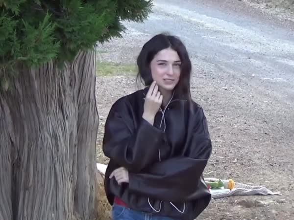
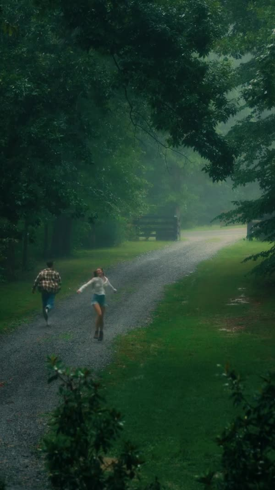

Для брендового аккаунта · Осень / Зима
Одежда.
Чувства.
Моменты.
Идеи для контента, в котором
хочется узнать себя.


Настроение будущих съёмокЧто я предлагаю
Показывать вещи.
Передавать чувства.
От идеи к съёмке
Посмотрим на примерах.
Референс показывает подачу.
Рядом — то, как я предлагаю её адаптировать.
Первый шаг
Я бы начал
с «Зимы вдвоём».
История про близость, зимнее настроение
и нашу одежду в моменты, которые хочется запомнить.